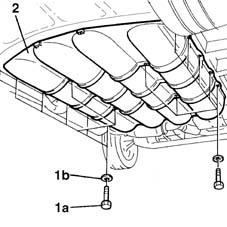

1043E12 gpl tank guard protection r r
- Path
- Procedures > 10 ENGINE UNIT > 1043 LGP TANK AND PIPES > 1043E protections fastenings > 1043E12 gpl tank guard protection r r
- Kind
- repair procedure (removal / refitting; the operation number is the code)
- Applies to
- engines: 1.6 16v; all production periods; only with equipment: GPOWER
- Interactive page
- https://sloeber94.github.io/elrnDB-fMltpl/en/#/2891511
Applies to: engines: 1.6 16v; all production periods; only with equipment: GPOWER and Euro 3
 Removing
Removing
 Refitting
RefittingPlace the car on a ramp.
Disconnect the battery negative terminal.
1. Undo the fixing bolts (1a) and recover the washers (1b).
2. Remove the LPG tank steel guard.

Applies to: engines: 1.6 16v; all production periods; only with equipment: GPOWER and Euro 3
Refitting
RemovingPosition the shield for the canisters.
Screw in and then tighten the bolts fixing the shield to the bodyshell.
 | Fastening | Component | Ø | Value (daNm) |
|---|---|---|---|---|
- | Bolt | LPG TANK PROTECTION/GUARD | M12 x 1.25 | (bodyshell) 4 |
Screw in and then tighten the bolts fixing the shield to the intermediate crossmember.
| Fastening | Component | Ø | Value (daNm) |
|---|---|---|---|---|
- | Bolt | LPG TANK PROTECTION/GUARD | M10 | (intermediate crossmember) 3 |
Screw in and then tighten the bolts fixing the shield to the bushes for the housing on the centre pins securing the canisters.
| Fastening | Component | Ø | Value (daNm) |
|---|---|---|---|---|
- | Bolt | LPG TANK PROTECTION/GUARD | M6 | (bodyshell) 0.8 |
Connect the battery negative terminal.
Remove the vehicle from the ramp.